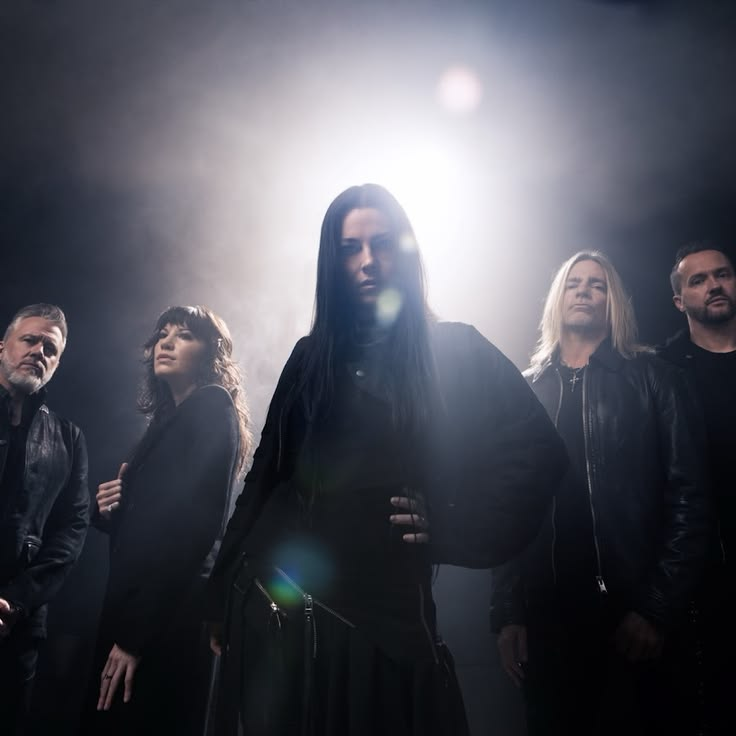
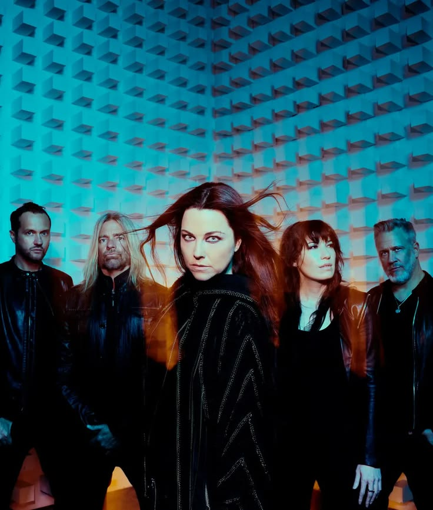
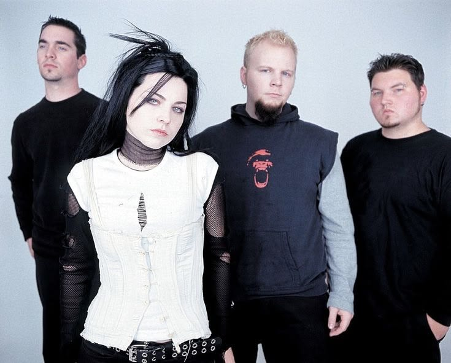
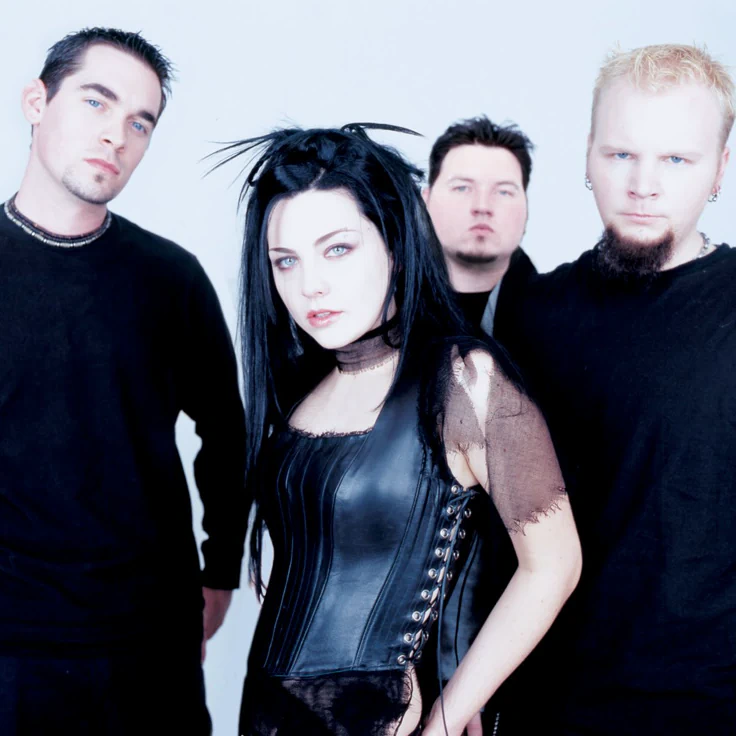

"Music is where I can be completely honest."

Amy Lynn Hartzler, conocida como Amy Lee, nació el 13 de diciembre de 1981 en California, Estados Unidos. Es cantante, pianista, compositora y productora, reconocida por ser la fundadora y líder de Evanescence.
Su estilo mezcla la música clásica con el rock alternativo y el metal, acompañado de una voz poderosa que la ha convertido en una de las artistas más representativas del género. Además de su trabajo con la banda, ha participado en proyectos para cine, videojuegos y colaboraciones con otros artistas.
Desde 1995 continúa liderando Evanescence y sigue siendo la principal compositora de sus álbumes.


Evanescence es una banda estadounidense de rock alternativo formada en Little Rock, Arkansas, en 1995. Su sonido combina guitarras, piano, orquesta y letras emocionales, creando una identidad única que ha inspirado a millones de personas en todo el mundo.
El grupo alcanzó el éxito internacional con el álbum Fallen en 2003 y desde entonces ha mantenido una trayectoria reconocida por la crítica y el público, evolucionando con cada lanzamiento sin perder su esencia.
Evanescence nació en 1995 cuando Amy Lee y Ben Moody comenzaron a escribir música juntos. Durante varios años publicaron demos y EP independientes mientras construían el estilo que más tarde los haría famosos.
En 2003 llegó el álbum Fallen, un éxito mundial gracias a canciones como Bring Me To Life, Going Under y My Immortal. El álbum ganó dos premios Grammy y convirtió a la banda en una de las más importantes del rock alternativo.
Con el paso de los años, Evanescence lanzó The Open Door, Evanescence, Synthesis y The Bitter Truth, explorando nuevos sonidos sin perder la esencia que caracteriza a la banda. Actualmente continúan realizando giras y creando nueva música para sus seguidores alrededor del mundo.
2003
El álbum que dio a conocer a Evanescence en todo el mundo.
2006
Una etapa más oscura y experimental con un sonido más maduro.
2011
Un álbum con un estilo más pesado y una producción moderna.
2017
Reinterpretaciones orquestales de sus mayores éxitos junto a nuevas canciones.
2021
Un álbum lleno de fuerza, resiliencia y el regreso del sonido más rockero de la banda.
Estas son algunas de las canciones más representativas de Evanescence. Haz clic en cualquier título para escucharla en YouTube.
Fallen (2003)
Fallen (2003)
Fallen (2003)
The Open Door (2006)
The Open Door (2006)
Evanescence (2011)
Evanescence (2011)
Evanescence Deluxe Edition (2011)